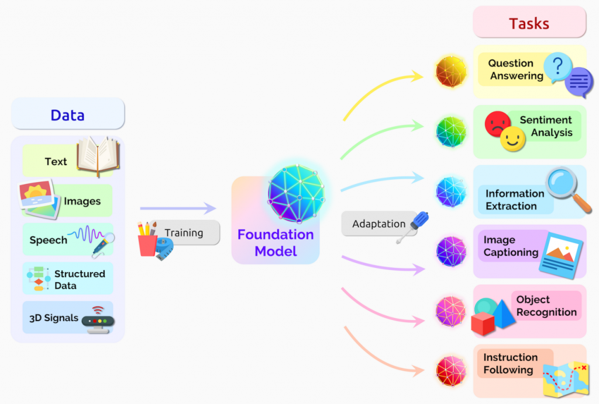
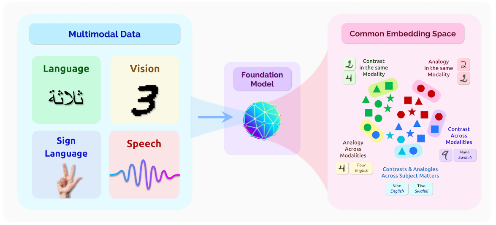

1.2 Foundation Models
⌛ Estimated Reading Time: 14 minutes. (2727 words)
Foundation Models - Video Introduction
This video is optional and not necessary to understand the text.
Foundation Model Paradigm. The foundation model paradigm came about in the mid-to-late 2010s. The machine learning strategy shifted from using task-specific labeled datasets to using large, unlabeled datasets and creating more generalist models that can later be fine-tuned for specific needs. You can think of them as the Swiss army knives because they are capable of everything from language translation to generating artwork.
Advances in specialized hardware and parallelism (e.g., large clusters of NVIDIA GPUs), new developments in neural network architectures (e.g. transformers), and the increased easy access to vast amounts of online data all contributed to the paradigm of foundation models. Examples of foundation models are BERT, GPT, Claude, DALL-E, Stable Diffusion, LLaMA, Gemini, and Mistral just to name a few.
We use the term frontier models to refer to a subset of foundation models that have cutting-edge state-of-the-art capabilities. Frontier models do not have to be foundation models, but they often are.
Economics of Foundation Models. The development and deployment of these models is still extremely resource-intensive, requiring significant investment in three main areas:
-
Data Acquisition. Foundation models are trained on large-scale datasets, often sourced from the internet. Collecting, cleaning, and updating these datasets can be costly, especially for specialized or proprietary data.
-
Computational Resources. The size of foundation models and their training datasets means that we need a lot of computational resources, including powerful hardware and electricity.
-
Research and Development. Beyond immediate costs, we also need ongoing investment in research to develop new techniques and fine-tune existing models. This requires both financial resources and specialized expertise.
The next section provides a deeper dive into the core underlying techniques used in the development of these models.
1.2.1 Techniques & Training
Overview of foundation model training. The training process of foundation models begins with pre-training on large, diverse datasets. We use self-supervised learning to train on unlabeled data. Finally, fine-tuning adapts the model’s general knowledge to specific tasks.
Pre-training. This is the initial phase where the model is trained on a massive dataset of millions or billions of examples. During this phase, the model learns general patterns, structures, and knowledge.
Self-Supervised Learning (SSL). This is how we actually implement the pre-training. Unlike traditional supervised learning (SL) which relies heavily on labeled data, Self-Supervised Learning (SSL) leverages unlabeled data, enabling models to learn from the inherent structure of the data itself.
For example, instead of manually labeling images, we might just hide part of a full image we already have and ask a model to predict what the rest should be. So it might predict the bottom half of an image given the top half, learning about which objects appear often together. It might learn for instance that images with trees and grass at the top often have more grass, or perhaps a path, at the bottom. It learns about objects and their context — trees and grass often appear in parks, dogs are often found in these environments, paths are usually horizontal, and so on. These learned representations can then be used for a wide variety of tasks that the model was not explicitly trained for, such as identifying dogs in images, or recognizing parks - all without any human-provided labels! In natural language processing, a model might predict the next word in a sentence, such as "The cat sat on the ____," learning grammar, syntax, and context as long as we repeat this over huge amounts of text.
Zero & Few-Shot Learning. These techniques enable models to perform tasks with very few examples. Zero-shot learning allows models to perform tasks without any specific examples, while few-shot learning enables them to generalize from a few examples. As an example, the model might learn to identify a new breed of dog after seeing just a few pictures, similar to how humans recognize new objects after just seeing them once or a few times.
Transfer Learning. We can now use our pre-trained model as a starting point for a new task or domain so that we don't have to start from scratch for every new task. The idea is to leverage the knowledge acquired by the pre-trained model from a large dataset and apply it to a related task with a smaller dataset. By doing so, we can benefit from the general features and patterns learned by the pre-trained model, saving time and computational resources. For example, a language model trained on general text data can be fine-tuned on legal documents to perform legal text analysis.
Fine-Tuning. Fine-tuning is one way that we can do transfer learning. In the fine-tuning phase, we adapt the model specifically to perform particular tasks. We use techniques like Reinforcement Learning from Human Feedback (RLHF) to further refine them to be more effective at specific things. As an example, a general-purpose language model like GPT-4 might be fine-tuned to improve its conversational abilities and follow instructions, giving us ChatGPT.

Figure: Bommasani Rishi et. al. (2022) "On the Opportunities and Risks of Foundation Models"
Elicitation Techniques. Lastly, we use prompts to point the model to use its abilities in even more specific context-relevant ways. Think of this as giving the model a final nudge in the right direction. The structure of the prompt can have a large effect on the overall performance we are able to get out of the system. We only briefly introduce the concept here. There are a variety of elicitation techniques like chain-of-thought (CoT) that will be discussed in later chapters.
1.2.2 Properties

Figure: Bommasani Rishi et. al. (2022) "On the Opportunities and Risks of Foundation Models"
Efficient use of resources. Foundation models have the capacity to elevate their performance by leveraging additional data, more powerful computing resources, or advancements in model architecture. It's not merely a technique, but a pivotal attribute that dictates how well a model can adapt and expand its capabilities. As foundation models scale, they don't just grow; they become more nuanced, capable, and efficient in processing information, mirroring the enrichment of understanding and knowledge transfer. This makes scalability a crucial determinant in the operational efficacy of these models. We will discuss this capability further in the subsequent section on leveraging computation.
Generalization. This is the cornerstone of foundation models' effectiveness, enabling these AI systems to perform accurately on data they haven't previously encountered. This trait ensures the models remain versatile and reliable across various applications, making them indispensable tools in the AI toolkit. However, even though foundation models are displaying increasingly better generalization of capabilities, more research is needed to ensure the generalization of goals as well. The issue of capability generalization without goal generalization is something we will tackle in depth in subsequent chapters.
Multi-modality. This is a newer property that is still emerging as of 2024 but is expected to become extremely relevant as the years progresses. This opinion was reflected by Sam Altman, CEO of OpenAI in a conversation with Bill Gates, where he mentioned "Multimodality will definitely be important. Speech in, speech out, images, eventually video. Clearly, people really want that. Customizability and personalization will also be very important." (source)
We slightly touched on these capabilities in the section on state-of-the-art AI. This characterizes the capability of foundation models to process, interpret, and generate insights from various types of data, or "modalities," such as text, images, audio, and video. The power of multimodality in foundation models lies in its potential to create richer, more nuanced representations of information. By leveraging multiple forms of data, these models can establish deeper connections and uncover insights that might be missed when data types are considered in isolation. This can be considered similar to humans, where our comprehension of the environment is enhanced by integrating visual, auditory, and textual information, thereby offering a more holistic understanding of our surroundings.
1.2.3 Limitations & Risks
Balancing Cost and Accessibility. The development and training of foundation models require a significant investment, posing a delicate balance between cost and accessibility. While adapting an existing model for a specific task might be more cost-effective than developing a new one from scratch, potentially democratizing access to cutting-edge AI capabilities, the substantial initial costs risk centralizing power among a few well-resourced entities. This concentration of power can exacerbate existing inequalities, as only wealthy organizations or nations can afford to develop and deploy these advanced systems.
Additionally, there is an ongoing debate about whether these models should be open-sourced. Open sourcing can democratize access, allowing more people to benefit and contribute to advancements. However, it also increases the risk of misuse, as malicious actors could exploit these powerful tools for harmful purposes, such as generating deepfakes or coordinating cyberattacks. We talk more about these issues in the chapters on the risk landscape and AI governance.
Homogenization. The process of homogenization refers to the situation where an increasing number of AI systems are merely fine-tuned versions of the same foundation models. Therefore, if a foundation model has certain biases or failure modes, these could potentially be propagated to all models that are fine-tuned from this foundation. This is a significant risk because if the same problem exists in the foundation model, it could manifest across many different models and applications, leading to widespread and potentially correlated failures. For example, if a foundation model has been trained on data that has gender or racial biases, these biases could propagate to all models fine-tuned from it, leading to biased decisions across various applications, whether it be text generation, sentiment analysis, or even predictive policing.
Emergence. Increasing the centralization of general-purpose capabilities within a single model might result in unexpected and unexplainable behavior arising as a function of scale. This describes the phenomenon where foundation models exhibit complex behaviors or outputs not explicitly programmed, arising unpredictably from some underlying learned patterns. Emergent qualities rather than their explicit construction provide immense benefits, but this also makes foundation models hard to understand, predict, and control. This lack of predictability and control is a significant concern when these models are used in high-stakes domains. If they fail in ways that are outside our current understanding and expectations, these failures could be particularly problematic when combined with the homogenization described above. The same foundation model integrated into multiple critical functions could lead to correlated failures that span multiple critical functions or failsafes. This phenomenon of emergence is also talked about in more detail in subsequent sections.
We are only introducing the notion of emergence here, but we talk more about unexpected behavior due to scale in the section on scaling laws, as well as explore different arguments around emergence in the chapter on the landscape of AI risks.
1.2.4 Questions & Exercises
What are foundation models?
Foundation models are large-scale, pre-trained models that serve as a base for fine-tuning various downstream tasks. These models are trained on vast, diverse datasets to learn broad patterns and skills, enabling them to generalize well across different applications.
They are different from traditional machine learning models because they are pre-trained on massive datasets and then fine-tuned for specific tasks. Traditional models are typically trained from scratch for each individual task.
Example: Imagine a foundation model like GPT-3, which has been trained on diverse internet text. It can then be fine-tuned to write poetry, generate code, or summarize articles, demonstrating its versatility.
What are the three main areas where significant investment is required for the development of foundation models?
The three main areas requiring significant investment for foundation models are:
-
Data Acquisition: Collecting, cleaning, and updating large-scale datasets.
-
Computational Resources: Providing the necessary hardware and electricity for training and deploying models.
-
Research and Development: Ongoing investment in developing new techniques and fine-tuning existing models, requiring financial resources and specialized expertise.
Example: Training a model like GPT-4 required huge amounts of internet text (data acquisition), powerful GPUs and TPUs (computational resources), and a team of researchers to develop and refine the model (research and development).
How does fine-tuning differ from pre-training in the context of foundation models?
Fine-tuning is the process of specifically adapting a pre-trained model to perform particular tasks. Unlike pre-training, which involves learning broad patterns from large datasets, fine-tuning hones the model's capabilities for specific applications. This step enables the creation of versatile models capable of undertaking a wide range of tasks with high accuracy.
Example: OpenAI fine-tuned GPT-3 on specific datasets to enhance its ability to generate human-like text for customer support chatbots, making it more responsive and accurate in that context.
Why is scalability important in the performance of foundation models?
Scalability is crucial for foundation models as it dictates their ability to adapt and expand their capabilities by leveraging additional data, more powerful computing resources, or advancements in model architecture. As foundation models scale, they become more nuanced, capable, and efficient, enhancing their operational efficacy and broadening their applicability.
Example: Scaling up models like GPT-3 from 1.5 billion parameters to 175 billion parameters resulted in significantly improved performance across a range of tasks, from language translation to question answering.
What is multi-modality, and why is it expected to become increasingly important in foundation models?
Multi-modality refers to the ability of foundation models to process, interpret, and generate insights from various types of data, such as text, images, audio, and video. This capability is expected to become increasingly important because it allows models to create richer, more nuanced representations of information, offering a more holistic understanding of complex environments and tasks.
Example: A multi-modal model like DALL-E can generate images from textual descriptions, combining language and visual data to create unique and contextually appropriate images.
What are the risks associated with the homogenization of foundation models?
The homogenization of foundation models refers to the widespread use of fine-tuned versions of the same foundation models. This poses risks such as the propagation of biases or failure modes present in the original model across multiple applications. If a foundation model has certain biases, they can be replicated in all derivative models, leading to widespread and potentially correlated failures.
Example: If a foundation model trained on internet text contains gender biases, these biases might manifest in various applications, such as biased hiring recommendations or biased language generation.
How can the use of foundation models impact data privacy?
The use of foundation models can lead to privacy concerns because these models can inadvertently memorize and reproduce sensitive information from their training data. This is particularly problematic when the training data includes personal or confidential information, raising significant privacy and security issues.
Example: A language model like GPT-3 might accidentally generate text containing personal information it encountered during training, such as snippets of private conversations or confidential documents.
How can centralized development of foundation models be both a benefit and a drawback for AI safety?
Centralized development of foundation models can be a benefit for AI safety because it allows for more controlled and coordinated efforts to ensure model safety and alignment. However, it can also be a drawback because any flaws or biases in the centrally developed models can propagate widely, affecting many downstream applications. Additionally, it might lead to power concentration in the hands of a few companies which poses a different dimension of risk.
Example: A centrally developed model by a major AI company could be rigorously tested for safety and biases, but if an overlooked bias exists, it could impact a wide range of applications built on that model.
What are some potential unintended emergent capabilities in foundation models, and why are they concerning?
Emergence refers to the unexpected and unexplainable behaviors or outputs that arise from foundation models as they scale. These emergent qualities can provide immense benefits but also make the models hard to understand, predict, and control. When the model is deployed and used in different contexts, emergent capabilities can lead to unpredictable and potentially harmful outcomes, making it challenging to ensure the model's safety and reliability.
Example: A foundation model trained for general language tasks might unexpectedly develop the ability to generate extremely convincing but false medical advice, posing risks if used in health-related applications.